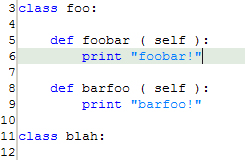
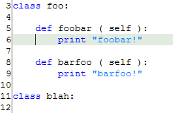
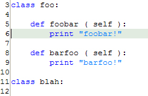

<!--===============================================================================================

	File:		editor_gotofc.html

	Author:		Parhaum Toofanian, Copyright 2004
	Contact:	ptoofani@andrew.cmu.edu
	Created:	2004-06-14
	Modified:	2004-06-14

	Part of PyDev User Guide in Eclipse.  Describes information about Goto First Char
	in the plug-in, along with screenshots and helpful information on hotkeys.

================================================================================================-->


<!doctype html public "-//w3c//dtd html 4.0 transitional//en">
<html>

	<head>
		<script src = "includes/script.js" language="javascript" type="text/javascript"></script>
		<link rel = stylesheet href = "includes/style.css" type = "text/css">
		<meta http-equiv="Content-Type" content="text/html; charset=iso-8859-1">
		<title>PyDev User Guide</title>
	</head>

	<body>

		<script language="javascript">
			var heads 	= new Array ( );
			var links 	= new Array ( );
			var i 		= 0;

			heads[i] 	= 'PyDev User Guide';
			links[i++] 	= 'index.html';

			heads[i] 	= 'Editor';
			links[i++] 	= 'editor.html';

			heads[i] 	= 'Go to First Character';
			links[i++] 	= 'editor_gotofc.html';

			writeHeading ( heads, links );
		</script>

		<!-- Description -->
		<script language="javascript">
			var headline = 	'Description';
			var desc	= 	'This action allows the user to go to the first non-whitespace character ' +
							'on the line their cursor is on.  If the cursor is already at that ' +
							'character, it jumps to the first character on the line (including ' +
							'whitespace.';

			writeGeneric ( headline, desc );
		</script>

		<!-- Invocation -->
		<script language="javascript">
			var rows = new Array ( );
			var hotkeys = new Array ( );

			rows[0] 	= 3;

			hotkeys[0] 	= 'Home';

			var desc	= '';

			writeInvocation ( rows, hotkeys, desc );
		</script>

		<!-- Process -->
		<script language="javascript">
			var headline = 	'Process';
			var desc = 		'From the location your cursor is positioned, invoking this action will ' +
							'cause the cursor to jump to the first non-whitespace character in that ' +
							'line.<br><br>' +
							'Invoking the action with the cursor here within method foobar:<br><br>' +
							'<br><br>' +
							'Or with the cursor on whitespace on the same line:<br><br>' +
							'<br><br>' +
							'Jumps the cursor to the first non-whitespace:<br><br>' +
							'<br><br>' +
							'Invoking the action again jumps to the first character in the line:<br><br>' +
							'';

			writeGeneric ( headline, desc );
		</script>

		<!-- Selection -->
		<script language="javascript">
			var headline = 	'Selection';
			var desc = 		'If the cursor is on a single line, highlighted or otherwise, it will ' +
							'jump to the first non-whitespace character on that line.  If the cursor ' +
							'is already at that character, it will jump to the first character on the ' +
							'line.  If a group of lines are highlighted, the cursor will act as if ' +
							'only the first line in the group has been selected.';

			writeGeneric ( headline, desc );
		</script>

	</body>

</html>